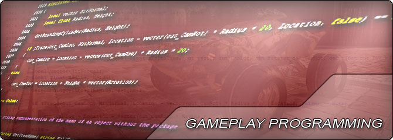

UDN
Search public documentation:
GameplayProgrammingHomeJP
English Translation
中国翻译
한국어
Interested in the Unreal Engine?
Visit the Unreal Technology site.
Looking for jobs and company info?
Check out the Epic games site.
Questions about support via UDN?
Contact the UDN Staff
中国翻译
한국어
Interested in the Unreal Engine?
Visit the Unreal Technology site.
Looking for jobs and company info?
Check out the Epic games site.
Questions about support via UDN?
Contact the UDN Staff
UE3 ホーム > ゲームプレイ プログラミング
ゲームプレイ プログラミング

- 入門編 : ゲームプレイ要素 - 新たなゲームプレイ要素を作成する方法を入門レベルで解説。
- UnrealScript ホーム - UnrealScript プログラミング言語に関して詳細に解説。
- ゲーム開発のクイックスタート - ゲーム開発の出発点となりうる、空のゲームの骨組みを作成します。
- Vista 64 bit での開発 - Vista 64 bit 上で開発する際の問題と対処法について。
- アクタのティック - アクタがティックされる方法と時期について解説。
- アクタ コンポーネント - アクタ コンポーネントの作成と使用法について解説。
- UnrealScript のゲームフロー - UnrealScript を使用した場合のゲームのライフサイクルについて解説。
- ゲームプレイ技術ガイド - 新たなタイプのゲームプレイとルールを作成するための情報。
- キャラクター技術ガイド - カスタムのプレイヤーと NPC を作成するためのプログラマー用ガイド。
- カメラ技術ガイド - 技術的な例をともなった、カメラシステムの概要。
- ビークル (乗り物) の技術ガイド - 新たなビークルを作成するためのプログラマー用の情報。
- 武器の技術ガイド - カスタムの武器を作成するためのプログラマー用ガイド。
- アーキタイプ - アーキタイプ概要。(アーキタイプとは何か、どのように使用するかについて)。
- アーキタイプ テクニカルガイド - アーキタイプの技術的側面について。
- ゲームプレイのデバッグ - ゲームプレイアイテムのテストとデバッグ用機能について。
- ゲームプレイプロファイラー - ゲームプレイプロファイラーツールの使用法に関する解説。
- ゲームプレイプログラマーのためのゲームプレイ最適化 – ゲームプレイとレンダリングを最適化するためのワークフロー。